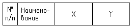

Чертит таблицу координат указываемых точек
Вставляемая таблица это "настоящий" автокадовский объект с таким названием.
Заголовок вставляемой таблицы
Команда: draw_coord_table_be_pick_point
 выбирает параметры желаемой таблицы и сопутствующих подписей, от этих параметров зависит и результат и последующие запросы
выбирает параметры желаемой таблицы и сопутствующих подписей, от этих параметров зависит и результат и последующие запросы
Поле Таблица позволяет выбрать будет создаваться новая таблица или данные будут добавляться в существующую. В первом случае будет выведен запрос на точку вставки новой таблицы, а во втором запрос будет на указание таблицы в которую будут дабавлены данные
Новая
Укажи точку вставки таблицы координат:
указывает точку, таблица будет вставляться в низ и на право
Продолжить
Выбери существующую таблицу координат:
указывает объект пипа таблица
Поле Подписи точек - под подписями имеется в виду мультивыноски. Режимы отвечают за работу с мультивыносками:
Не надо - мультивыносок нет и не нужно.
Укажи точку:
указывает точку, у которой будут определяться координаты
Что это?:
вводит текстовую строку которая будет помещена в графу наименование таблицы
Вставлять - мультивыносок нет но их нужно вставлять.
Укажи точку:
указывает точку, у которой будут определяться координаты
Что это?:
вводит текстовую строку которая будет помещена в графу наименование таблицы и в текст добавленой мультивыноски
Укажи точку куда положить подпись?<ENTER - пропустить эту подпись>:
указывает точку вставка текстовой части мультивыноски или ENTER (пустой ввод) если конкретно эта подпись не требуется.
Уже есть - если на всех определяемых точках уже есть мультивыноски.
Выбери выноску:
указывает существующую мультивыноску. Координаты определяются из точки указания мультивыноски, а Наименование из текстовой строки
Запросы точек и мультивыносок повторяются циклично, выход из программы пустой ввод.
Поле Наименование отвечает за начальный номер пункта в таблице